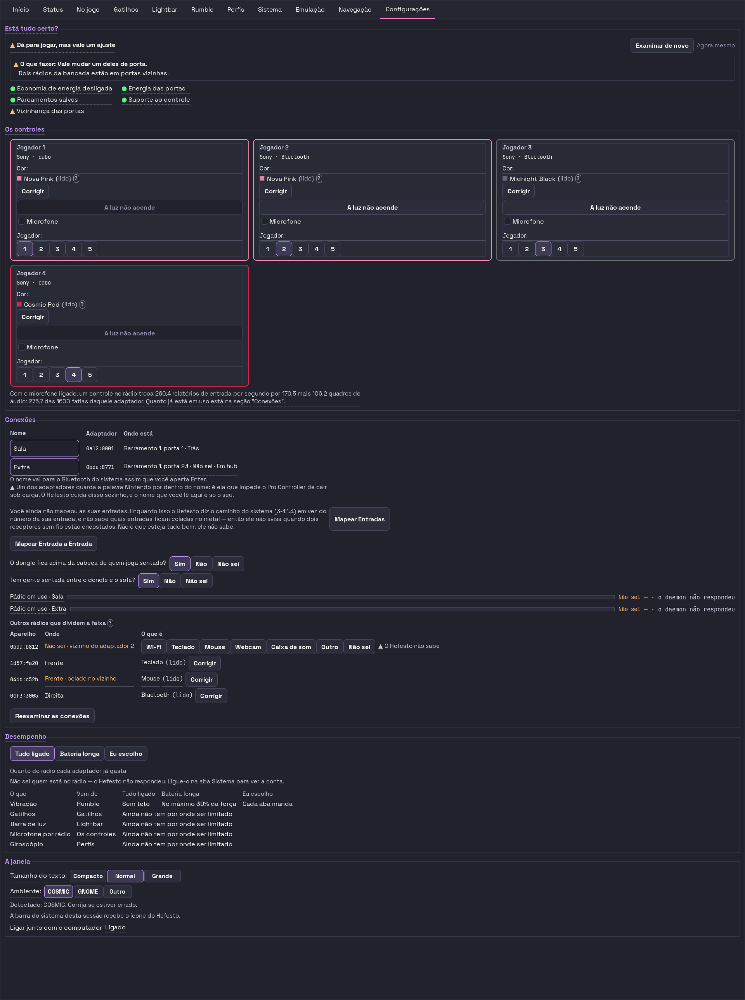
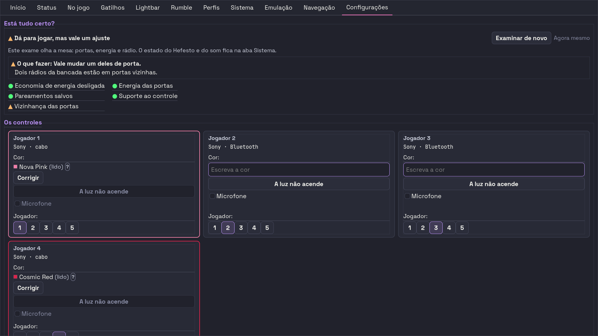

gerado em 23/08/2026 às 21:48 · branch dev · 68befc9
Hefesto · painel do projeto
O irmão do mapa de canais. Aquele responde
o que o aparelho entende; este responde onde o projeto está.
Os números do mapa aqui não são recontados — vêm do mesmo gerador, para os dois
não terem como discordar.
8
decisões esperando você
272
arquivos de sprint na árvore
79
não citados no SPRINT_ORDER
110
chaves no mapa de canais
27
features que divergem cabo × rádio
243
linhas sem teste que morda
11/12
portões verdes
O que espera você 8 decisão(ões) aberta(s)
Nenhuma destas é conserto de código — são escolhas de produto, e a palavra é
sua. Cada uma abre com o preço de decidir para o outro lado,
porque decidir vendo inclui ver o custo. A fonte é
docs/data/decisoes-dela.csv: responda lá, ou me diga, e o painel
acompanha. Decisão respondida não some — fica no fim, com a data.
Um dos seus três adaptadores está desligado por software, com 3 aparelhos pareadosD-HCI1-BLOQUEADO
a pergunta
Desbloquear o hci1, ou ele está assim de propósito?
os caminhos
desbloquear (rfkill unblock) · está de propósito, e o produto tem de dizer isso na tela
recomendo
desbloquear — e, nos dois casos, o produto passa a AVISAR em vez de pintar verde
o preço do outro lado
Enquanto estiver bloqueado, todo controle pareado nele simplesmente não conecta, e a aba Configurações diz 'Folgada' em VERDE sobre ele. Quem for diagnosticar vai procurar o defeito no controle.
por que espera você
Desbloquear é ação na máquina dela, e a bancada é dela. O que é do produto — parar de pintar verde sobre rádio desligado — não espera decisão: é defeito.
custo
desbloquear: 1 comando. O aviso na tela: ~10 linhas, e ele é a 'metade A' do portão do dado.
onde mora
medido em 23/08: rfkill diz Soft blocked: yes no hci1 (AC:A7:F1:00:00:41), que tem 3 aparelhos pareados. O dado JÁ chega ao produto: Dongle.ligado atravessa o D-Bus e entra na dataclass em integrations/apelido_do_dongle.py:217 — e morre ali, sem consumidor.
Quem é dono da costura do apelido de BlueZD-COSTURA-BLUEZ
a pergunta
O produto assume a costura do prefixo Nintendo nos adaptadores, ou o script continua dono?
os caminhos
o produto assume (e o bt_active_mode.sh para de costurar) · o script continua dono (e a função é a rota que espera)
recomendo
o script continua dono, por enquanto
o preço do outro lado
Ligar a função hoje RECRIA a duplicidade que o commit e5376a0 desfez em 22/08 — dois escritores do mesmo alias de BlueZ. O commit registra isso com todas as letras.
por que espera você
Não é conserto de código: é decisão de dono. Enquanto ela não sair, dar chamador à função é regressão, não cura.
custo
a decisão é de minutos; a execução depende do lado escolhido
onde mora
integrations/apelido_do_dongle.py::costurar_a_mesa (declarada em tests/unit/portao_a_casa_sabe_e_o_produto_nao_faz.py, tabela _SEM_CAMINHO_HOJE)
A altura da aba ConfiguraçõesD-ALTURA-CONFIG
a pergunta
As duas maiores seções nascem colapsadas em Gtk.Expander?
os caminhos
colapsar as duas maiores (a aba cai de 2116px para 734px) · deixar como está · outra divisão
recomendo
colapsar as duas maiores
o preço do outro lado
Deixar como está: 43% da aba visível, e TRÊS das cinco seções nascem abaixo da dobra. A segunda aba mais alta do produto tem 936px — esta tem 2,5 vezes isso.
por que espera você
Muda o que se vê ao ABRIR a aba, e isso é PROVA-DE-TELA-01: foto antes e depois, e a palavra final é dela.
custo
~30 linhas, meio dia
onde mora
app/actions/config/secoes.py (a ordem) e moldura.py (a moldura)

como está hoje
A ordem das cinco seções da aba ConfiguraçõesD-ORDEM-SECOES
a pergunta
O exame continua no topo apontando para uma seção que está duas abaixo?
os caminhos
mover A mesa para logo depois do exame · deixar como está · outra ordem
recomendo
mover A mesa para logo depois do exame
o preço do outro lado
Hoje o exame termina dizendo 'veja a seção A mesa' — e ela está DUAS seções abaixo, atrás da grade de cards inteira. Quem abre a aba por causa de um problema tem o caminho partido ao meio por conteúdo que não tem a ver com a queixa.
por que espera você
É a ordem da tupla — uma linha de código. Mas muda o que se vê ao abrir.
custo
1 linha, 10 minutos + refotografar
onde mora
app/actions/config/secoes.py

como está hoje
O "não sei" do número de JogadorD-JOGADOR-NAO-SEI
a pergunta
A dica promete "Sem nenhum marcado, vale a ordem de chegada" — um estado que ela não consegue alcançar. Cria-se o verbo, ou corrige-se a dica?
os caminhos
verbo IPC novo de desafixar, com conceito de pino no registro · reescrever a dica para parar de prometer o inalcançável
recomendo
reescrever a dica agora; o verbo como pergunta sua
o preço do outro lado
O verbo é meio dia e mexe no registro de identidade do daemon. A dica é 1 linha e 10 minutos, mas o produto continua sem como desafixar.
por que espera você
Medido: o identity.number.set recusa número < 1 e o daemon PERMUTA em vez de fixar — não existe 'desafixado' para onde voltar.
custo
dica: 1 linha, 10 min | verbo: meio dia
onde mora
app/widgets/external_card.py (a dica) e daemon/ipc_handlers.py (o verbo)
A redação do diálogo de fechamento e da marca de pendênciaD-TEXTO-FECHAMENTO
a pergunta
Os textos provisórios que os agentes deixaram ficam, ou são reescritos?
os caminhos
aprovar os provisórios · reescrever · reescrever alguns
recomendo
ler e reescrever o que soar de máquina — a voz do produto é dela
o preço do outro lado
Provisório que fica sem revisão vira definitivo por inércia, e a tradução para o inglês o carrega junto.
por que espera você
Classe estrutural: texto NOVO de tela. Ela pré-aprovou só a classe cosmética.
custo
minutos de leitura
onde mora
app/app.py (diálogo), app/actions/footer_actions.py (marca e frase de sucesso), app/actions/config/secao_mesa.py (selo do medidor)
A assimetria entre escrever e ler o maquina.jsonD-LEITURA-MAQUINA-JSON
a pergunta
A LEITURA passa a resgatar campo a campo, como a escrita já faz?
os caminhos
sim, simetria · não, a leitura continua estrita
recomendo
sim — mas é invariante documentada, e mudá-la é decisão sua
o preço do outro lado
Hoje a escrita resgata o que vale e a leitura devolve documento vazio com qualquer campo inválido: o daemon sobe sem teto e sem a ponte de microfone, em silêncio.
por que espera você
Muda invariante escrita no docstring do módulo.
custo
~10 linhas + teste que morde
onde mora
utils/maquina.py
O botão "Outra" com o campo livre vazioD-COR-OUTRA-VAZIA
a pergunta
Escolher "Outra" e não digitar nada deixa o botão afundado declarando None. Isso fica?
os caminhos
fica (é 'sei que é outra, não sei qual') · volta para não sei · exige o texto
recomendo
fica, com a dica dizendo o que significa
o preço do outro lado
Se ficar sem explicação, a tela mostra um botão afundado que não declara nada — e a pessoa não tem como saber.
por que espera você
É comportamento de tela; o A4 não decidiu por conta própria, e fez certo.
custo
1 a 5 linhas
onde mora
app/widgets/external_card.py
Os portões
portão
estado
o que ele disse
ruff
verde
All checks passed!
mypy
verde
Success: no issues found in 207 source files
acentuação
VERMELHO
tests/unit/test_a5_fechar_a_janela_nao_perde_a_declaracao.py:16:nao -> sugestão não
1 violação(es) de acentuação PT-BR encontrada(s).
glifos
verde
referências
verde
OK: 401 documento(s) sem referência morta.
palavra de tela
verde
anonimato
verde
OK: anonimato preservado.
versão
verde
OK: 12 alvo(s) versionado(s) em 0.9.4.5. Data da release corrente confere com o CHANGELOG.
empacotamento
verde
oader SVG do gdk-pixbuf (o que desenha) × o que cada formato declara ==
[ OK ] loader SVG: declarado no .deb,
dados de teste
verde
OK: dados de teste neutros.
paridade de transporte
verde
tenta sozinha...... 36
desses, SEM ensaio no caderno.......... 0
desses, na direção de ENTRADA (
specs.html em dia
verde
specs.html: atualizado (confere com o CSV, com o caderno de ensaios e com os três desenhos)
medido 23/08 às 18:36 · há 3 h.
Portão verde não prova que ele mede o que promete — a casa já achou três
instrumentos falsos num dia só. Verde aqui quer dizer não acusou.
As sprints
272
arquivos
102
carregam a palavra ABERTA
56
carregam CONCLUÍDA ou FECHADA
33
índices
160
citadas no SPRINT_ORDER
79
fora da fila
Esta contagem NÃO classifica. Ela conta arquivos e
conta quantos carregam a palavra — e as duas somas se sobrepõem de propósito:
o SPRINT_ORDER.md registra seis sprints com cabeçalho de concluída
ACIMA de um Status: ABERTA preservado de propósito.
Um classificador que fingisse resolver isso produziria número convincente e
falso, que é a armadilha mais cara desta casa. O julgamento de estado é do
batedor de sprints; aqui fica só o que dá para contar sem julgar.
O mapa de canais
110
chaves
308
linhas (chave × controle)
27
divergem entre cabo e rádio
243
sem teste que morda
Enquanto a última coluna não
zerar, o mapa mede o que a casa acredita, não o que ela
garante: se aquela feature quebrar naquele transporte, a suíte
inteira continua verde. Os detalhes estão no specs.html.